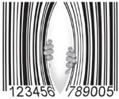
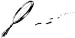
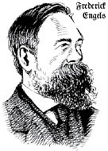
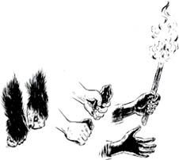
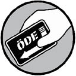
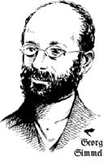
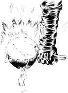
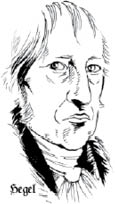

Bölüm 1

META1
Marx kapitalizmin eleştirisine günlük, sıradan bir şeyle, meta ile başlar. Kapital’in ilk satırları şöyledir:
Kapitalist üretim tarzının egemen olduğu toplumların zenginliği, “muazzam bir meta yığını” olarak görünür; bunun basit biçimi tek bir metadır. Bu nedenle, incelememiz, metanın analiziyle başlıyor.
Marx, Kapital, s. 49
Herkes bilir ki bir meta alınıp satılan ya da eşit değerde olduğu düşünülen başka bir şeyle mübadele (değiş-tokuş) edilen bir şeydir.
Metaların insanlara yararlı oldukları için alınıp satıldıkları açıktır.
Öyleyse bir metanın iki yüzü vardır. Bir kullanım değeri, bir de mübadele değeri. Bir mübadele değeri kendini, metaların mübadele edildiği fiyat olarak açığa vurur.
Öyleyse bizim meta için başlangıç tanımımız şudur: İnsanlara yararlı olduğu için alınıp satılan bir şey. Böyle söylenince hiçbir sorun yokmuş gibi görünür. Metanın kullanım değeri yüzü ile mübadele değeri yüzü birbirine güzelce uymuş gibidir.
Bir meta, ilk bakışta, kolayca anlaşılan sıradan bir şey gibi görünür. Metanın analizi, onun metafizik safsatalarla ve teolojik süslerle dolu çok karmaşık bir şey olduğunu gösterir.
Marx, Kapital, s. 81

Meta ilk bakışta kolayca anlaşılabilir sıradan bir şey gibi görünse de Marx, kapitalizmde şeylerin göründükleri gibi olmadığını gösterir.
Marx’ın çözümlemesi aslında, çağdaş kapitalizmde kullanım değeri ile mübadele değerinin birbiriyle savaş halinde olduğunu gösterir.
Gelin önce şeylerin kullanım değeri yüzünü ele alalım. Gelişigüzel bir ürün demeti düşünelim: Bir çay poşeti, bir çekiç, bir dürbün.
İlk gözünüze çarpan şey, kullanım değeri olarak her birinin ne kadar farklı yararları olduğudur. Gerçekten de bu yararlar her ürün için kendine özgüdür.
Çay poşetini çivi çakmak ya da çekici uzağı görmek için kullandığınızı düşünün, başarılı olma şansınız pek yoktur.
Bir şeyin yararlılığı, onu kullanım değeri haline getirir. Ne var ki, bu yararlılık, havada duran bir şey değildir. Meta, cisminin özellikleriyle belirlendiğinden, o olmadan var olamaz.
Marx, Kapital, s. 50
Bu ürünlerin birbirinden farklı olmasının yanı sıra kendilerine özgü yararları büyük ölçüde kendi fiziksel yapılarına bağlıdır.
Su geçirmeyen bir çay poşetiyle bir bardak çay hazırladığınızı, ya da mercekleri olmayan bir dürbün kullandığınızı düşünün.
Demek ki bu ürünlerin yararlılıkları tamamen fiziksel yapılarıyla ve parçalarının birleşimiyle ilişkilidir. Bu da yine yararlı olmalarının, kendilerine özgü belli niteliklere bağlı olduğu anlamına gelir.
Ürünlerin hammaddeleri nereden gelir? Açıktır ki başlangıçta hepsi şu ya da bu biçimde doğal malzemelerdir. Çay bitkiden, poşeti ağaç ve sebze liflerinin karışımından gelir. Çelikten yapılmış bir çekiç, demir ve karbon bileşimidir. Mercek için gerekli cam da kum ve kireç gibi doğal malzemeden üretilir.
Kuşkusuz doğa, daha iyi, daha rahat, daha gelişkin yaşamamızı sağlayan bu yararlı ürünlere kendiliğinden dönüşmez. Bu İNSAN EMEĞİ ile yapılan, bir bakıma neredeyse sihirli bir dönüşümdür.
Çalışma, her şeyden önce, insanla doğa arasındaki bir süreçtir; bu süreçte, insan, doğa ile kendisi arasındaki madde alışverişini kendi çabasıyla yürütür, düzenler ve denetler. Doğanın sağladığı maddelerin karşısında bir doğa gücü olarak yer alır. Doğanın sağladığı maddeyi kendi yaşamında kullanılabilecek bir biçimiyle mülk edinmek üzere kendi canlı varlığının doğal güçlerini, kollarını ve bacaklarını, kafasını ve ellerini harekete geçirir. Kendi dışındaki doğa üzerinde etkide bulunur ve onu değiştirirken, aynı zamanda kendi öz doğasını da değiştirir. Böylece, doğada uyuklamakta olan güçleri geliştirir ve bunların hareketini kendi emri altına alır.
Marx, Kapital, s. 182
Demek ki kullanım değerinin kökenleri doğa ve insan emeğindedir. Bu, sadece yakın tarihimizdeki kapitalist üretim için değil, insanlık tarihi boyunca böyledir. İnsanlar kullanım değerini hep doğal hammaddelerden türetmiştir. Bu üretim süreci de bizi yaratıcı, akıllı insanlara dönüştürmüştür.
İnsan soyunun çalışma süreci, hayvanları yönlendiren sezgisel eylemden çok farklıdır.
Bir örümcek, dokumacının çalışmasını andıran faaliyetlerde bulunur ve bir arı, bal peteğini yaparken bazı mimarları utandırır. Ama en kötü mimarı en iyi arıdan daha en başından ayırt eden şey, mimarın, peteği balmumundan yapmadan önce kafasında kurmuş olmasıdır. Emek sürecinin sonunda, bu sürecin başında zaten işçinin imgeleminde, yani düşünsel olarak var olan bir sonuç ortaya çıkar. İşçi, sadece, üzerinde çalıştığı doğal maddeye biçim değişikliği vermiş olmakla kalmaz; aynı zamanda, bu doğal şey üzerinde, kendi faaliyetini yürütme biçimini bir yasa olarak belirlediğini ve kendi iradesini tâbi kılmak zorunda olduğunu bildiği amacını da gerçekleştirmiş olur.
Marx, Kapital, s. 182

İnsanın çalışması, sezgisel içgüdülerle değil de yaratıcılık ve düş gücüyle yönlendirildiği için, insanlar yaratıcı olabilir. Hem kendilerini çevreye uydurabilirler hem çevreyi kendilerine. Kendilerine ve çevrelerindeki doğaya ilişkin şeyler keşfedebilirler. Bütün bunlar insanlık tarihinin, doğa tarihinden farklı olabilmesini sağlar.
Elimizin alet yapıcı bir organa dönüşmesi, insanlık tarihinin gelişimini belirlemiştir. Marx’ın yaşam boyu dostu ve çalışma arkadaşı Friedrich Engels şöyle der:
Maymunun insana dönüştüğü binlerce yıl boyunca atalarımızın ellerini uyarlamayı yavaş yavaş öğrendikleri ilk işlemler çok basit şeylerdi. En ilkel vahşiler … yine de bu geçiş yaratıklarından çok üstündü. İlk çakmak taşının insan eliyle bıçağa dönüşmesinden önce geçen süre, bilinebilen tarihin uzunluğuyla karşılaştırıldığında önemsiz görünür. Ama belirleyici adım atılmıştır; el özgürleşmiş ve bundan sonra hep daha maharetli olabilmiştir; böylece artan esneklik kuşaktan kuşağa geliştirilerek aktarılmıştır.
Friedrich Engels,
Maymundan İnsana Geçişte Emeğin Rolü

Öyleyse bizim insan olarak ne ve kim olduğumuzun temelinde emek yatar. Emekle üretilen kullanım değerleri, belli emek türlerinin üzerinde çalıştığı hammaddelere verdiği özel niteliklerden türer.
Kâğıt yapmak istediğiniz ağacı, demir külçesiymiş gibi yüksek sıcaklıktaki fırına sokmanız işe yaramaz. Emek, farklı doğal malzemelerin taşıdığı özel niteliklerle iş görmek zorundadır.
Kapitalizmde insan emeğinin ne hale geldiğini düşünürsek, emekte içselleştirilmiş insan yaratıcılığına Marx’ın yaptığı övgüyü hatırlamamız gerekir.
Şimdi, insan emeğinin iki tür ürünü vardır. Bir tür, başka işlerin görülmesine yarayan aletler ve hammaddeler olarak kullanılır. Öbür tür, insanların kendilerini yeniden üretmek için tüketilen ya da kullanılan nihai ürünlerdir –bu, başları üzerindeki dam ya da yedikleri lokma olabilir.
İnsan emeği harcanarak elde edilen aletler ya da hammaddeler, örtük ya da olası kullanım değerleri olarak kalır. O kullanım değerlerini gerçek kılmak için ek emek harcanması gerekir.
Canlı emeğin bu şeylere el atması, onları ölüm uykularından uyandırması, yalnızca olası kullanım değerleri olmaktan çıkarıp, gerçek ve etkin kullanım değerleri haline sokması gerekir. Bu şeyler, emeğin ateşiyle harekete gelir, onunla bir vücut olur, süreç içinde kendilerine düşen görevleri şevkle yerine getirmek için canlanır; gerçi, bu sırada tüketilirler; ama, bunun bir amacı vardır; geçim aracı olarak bireysel tüketim alanına veya üretim aracı olarak yeni emek süreçlerine girmeye hazır yeni kullanım değerlerinin, yeni ürünlerin yapıcı unsurları olmak üzere tüketilirler.
Marx, Kapital, s. 186
Marx’ın, aletlerde (gelişmiş makineleri de bunlara katabiliriz) ya da hammaddelerde var olan potansiyeli harekete geçirmek için gerekli canlı emek düşüncesi, daha sonra onun yaptığı kapitalizm çözümlemesi için çok önemli olacaktır.
Son olarak şunu da belirtmeliyiz ki Marx’ın deyimiyle “türümüzün varlığı” için emek, her ne kadar tam merkezdeyse de, o da doğaya bağımlıdır. Marx Kapital’de der ki bu ilişki “doğanın koyduğu hiç sona ermeyecek bir insan varlığı koşuludur, dolayısıyla da o varlığın bütün toplumsal aşamalarından bağımsızdır, daha doğrusu bütün bu aşamalarda geçerlidir.”
Kapitalizm tarih sahnesine çıktığında insan emeğine ne olduğu konusu ne kadar düşünmeye değerse, doğaya ve bizim doğayla ilişkimizin kapitalizmle ne hale geldiği de o kadar düşünmeye değer bir konudur.
Ama şimdilik buraya kadar söylediklerimizden çıkarmanız gereken tek şey, kullanım değerlerinin ve onları üreten sürecin, kendilerine özgü belli niteliklerle betimlendiğidir.
Ürünlerin kullanım değeri tarafını incelemeyi sürdürüyoruz. Gördüğümüz gibi insan soyu yaşamını sürdürmek ve geliştirmek için her zaman kullanım değerleri üretmiştir. Bu üretim, (sözgelimi kölelik ya da serflik gibi) zor ve adil olmayan koşullarda yapılmış olabilir ama şimdilik bu konuya girmiyoruz.
Kullanım değerleri, toplumsal biçimi ne olursa olsun, servetin maddi içeriğini oluşturur.
Marx, Kapital, s. 50
Ancak son birkaç yüzyıldır kullanım değerleri büyük ölçüde metalarda içerilmiştir. Bu da servetin, kapitalizm adını verdiğimiz yeni bir toplumsal biçimidir. Bunun anlamı, kullanım değerlerinin artık mübadele değerleriyle iç içe geçmiş olduğudur.
Ele alacağımız toplum biçiminde [kullanım değerleri], aynı zamanda, mübadele değerinin maddi taşıyıcılarını oluştururlar.
Marx, Kapital, s. 50
Peki, öyleyse mübadele değeri nedir?
Metaların birbiriyle değiştirildikleri değer olmalıdır. Bu mübadele değeri fiyatlarla açığa çıkar. Peki, fiyat nedir?
Fiyatlar, metaların parayı çağırmak için verdikleri işaretlerdir.
Marx, Kapital, s. 116
Metalar parada kolayca bölünebilen ve taşınabilen bir değişim aracı bulur. Ama para aynı zamanda metaların değerini de ölçer.
Öyleyse bir metanın mübadele değeri parada, kendi değerinin aynasını bulur.
Kapitalizm öncesi dönemde sıradan bir meta, sözgelimi bir tavuk, başka bir sıradan meta ile, diyelim tuzla değiştirilebilirdi, bugün kapitalizm döneminde sıradan bir meta, para ile değiştirilmektedir.

Metalar kendi değer biçimlerini temsil etmek üzere, kendileri hiçbir şey yapmaksızın, kendileri dışında ve kendilerinin yanı sıra bir meta cismini hazır bulur.
Marx, Kapital, s.101
Para, öbür bütün sıradan metalara eşlik eden evrensel bir ayna ya da bir denkliktir. Aslında kendisi de bir metadan başka bir şey değildir çünkü sıradan metanın mübadele değerini temsil eder.
Para yalnızca bir dolaşım aracı olarak işlev görür çünkü metaların değeri paranın içinde bağımsız gerçeklik olarak vardır.
Marx, Kapital, s. 121
Paraya daha yakından bakacak olursak mübadele değerinin doğasına ilişkin önemli bir şey bulabiliriz, bu da paranın hem değişim aracı hem değer ölçüsü olmasıdır.
Her biri bir öncekinden büyük üç para destesi düşünelim. Bu para tomarlarında gözümüze çarpan ilk şey aralarında pek az fark olduğudur. Aslında tek farkları niceldir.
Bu durum daha önce ele aldığımız sıradan üç meta (çay poşeti, çekiç ve dürbün) durumunun zıddıdır.
Onların her birinde çok farklı nitelikler olduğunu gördük. Bu nitelikler elbette belli niceliklerdedir. Nicel boyut, onların ne olduklarının doğal bir parçasıdır ama farklı yararlılıklarında asıl önemli olan nitel boyuttur. Bu konuda yapabileceğiniz fazla bir şey yoktur. Parayı giyemez, yiyemez, içemez ya da tahtaya çivi çakmakta kullanamazsınız. Nitel boyutu pek önemli değildir. Çoğu kişi için asıl önemli olan paranın nicel boyutudur: Kaç paran var!
Elbette parayı, genellikle hep yaptığımız gibi harcayabilirsiniz. Ama paranın kendisinin, bir çay poşeti ya da bir Picasso tablosu gibi içsel bir kullanım değeri yoktur. Marx’tan etkilenmiş Alman toplumbilimcisi Georg Simmel yirminci yüzyılın başında şöyle yazmıştır:
Para olanca tarafsızlığı ve kayıtsızlığıyla bütün değerlerin ortak paydası olmuş, nesnelerin özünü, bireyselliğini, özgül değerini, karşılaştırılamazlığını silip atmıştır.
Georg Simmel,
The Metropolis and Mental Life
(Metropol ve Tinsel Hayat)

Bu anlamda para, sıradan bir meta ile aynı değildir. Saf mübadele değeridir; metanın, yalnız parasal değeri cinsinden ifadesidir. Başka bir deyişle, metanın yalnız mübadele değeri yüzüdür.
Metalar, kullanım değerleri olarak, her şeyden önce, farklı niteliklere sahiptir; mübadele değerleri olarak ise, yalnızca farklı niceliklerde olabilirler, yani bir zerre bile kullanım değeri içermezler.
Marx, Kapital, s. 51
Eğer bizim sıradan metalarımız “bir zerre bile kullanım değeri” içermiyorsa, onlara bakmamızın ne anlamı var? Bu durumda onların sadece değerlerini ve birbirlerine eşdeğer oldukları miktarları ölçebiliriz.
Böylece 100 çay poşeti bir çekice, 1.000 tanesi bir dürbüne eşdeğer iken 7 çekiç de ayni dürbüne denk olabilir.
Bu metaları böylece birbirlerine denk hale getirdiğimizde artık onları nelerin farklılaştırdığıyla, yani kullanım değerleriyle ilgilenmeyiz. Bunlar nitelik bakımından artık tamamen aynıdır, yalnızca değer ifadeleri nicel olarak karşılaştırılabilir.
Dürbün satan bir dükkâna 1.000 tane çay poşetiyle değil parayla gideriz ama çay poşetiyle de gitsek parayla da gitsek bu aynı anlama gelir: 20 $ hem 1.000 çay poşetine hem bir dürbüne eşittir.
Metaların mübadele ilişkisini açık şekilde karakterize eden şey, tam da onların kullanım değerlerinden soyutlanmışlıktır.
Marx, Kapital, s. 51

1.000 çay poşetini 7 çekice ve bir dürbüne eşitlediğimizde onların farklılıklarını göz ardı edip hepsinin ortak bir şeyi paylaştıklarını söylemiş oluruz (Marx soyutlama eyleminden söz eder).
Paylaştıkları şey aynı parasal bedeldir. Özünde değer ne peki? Parayla ölçülen ne, değişim değeriyle ifade edilen ne?
Marx’ın buna yanıtı ilk başta bize garip gelebilir. Metalara değerlerini veren şey, insanın metanın içinde cisimleşmiş emek gücüdür.
Bu gariptir çünkü insan emeğinin kullanım değerlerinin üreticisi olduğunu, kullanım değerlerinin kendilerine özgü belirli niteliklerini paylaştığını görmüştük. Öyleyse nasıl oluyor da insanın emek gücü, Marx’ın “türdeş insan emeğinin maddeleşmiş biçimi” dediği bir şeyde kristalleşebiliyor?
Meta üretimine girişen insan emeğine kapitalizmde öyle bir şey oluyor ki çok farklı metaları denklikler olarak ölçülebilir hale getirebiliyor.

Emek ürünlerinin yararlı olma özellikleriyle birlikte, emeklerin bunlar aracılığıyla ortaya konan yararlı olma özellikleri de yok olur; dolayısıyla, bu emeklerin farklı somut biçimleri de yok olur; bunlar artık birbirlerinden ayırt edilmez olur; hepsi eşit insan emeğine, soyut insan emeğine indirgenir.
Marx, Kapital, s. 52
Öyleyse insan emeği bir yandan kullanım değerleri üretirken, öte yandan bir tür “soyutlanma” içine girer ve işte bu soyut insan emeği metalardaki değeri üretir.
Artık metaların iki yüzü olduğunu öğrenmiş bulunuyoruz: Kullanım değeri ve mübadele değeri. Bu ikisinin bir metadaki bileşiminin başta sandığımız gibi uyumlu olamayabileceğini görmeye başladık. Neden? Çünkü mübadele değerinin kullanım değeriyle hiçbir ilişkisi yoktur. Öyleyse kullanım değeriyle mübadele değeri zıt kardeşlerdir. Meta içinde bir araya gelmişlerdir ama biri (kullanım değeri) nitelik ilkesiyle, öbürü (mübadele değeri) nicelik ilkesiyle tanımlanır.
Metalar konuşabilseydi, derlerdi ki, insanları bizim kullanım değerimiz ilgilendiriyor olabilir. Şeyler olarak biz bunu içermeyiz. Ama şeyler olarak bizim içerdiğimiz, değerimizdir. Meta cisimleri olarak kendi ilişkilerimiz bunu kanıtlar. Birbirimizle yalnızca mübadele değerleri olarak ilişki kurarız.
Marx, Kapital, s. 91
Metanın iki yüzünün pek geçinemediklerini görmeye başlayabiliriz. Burada bir çelişki temeli bulunmaktadır. Birbirinin zıddı iki ilke aynı olgu, aynı nesne ya da aynı sistem içinde bulunursa çelişki başlar.
Ayrıca metanın ikili niteliğinin, metaları üretmeye girişen emeğin ikili niteliğiyle ilişkili olduğunu da gördük. Bir yanda, Marx’ın Kapital’de “doğasını amacının, üretim tarzının, konusunun, araçlarının ve sonucunun belirlediği özel bir tür üretim faaliyeti” dediği somut emek.
Öte yanda soyut emek –ki bağımsız bir faaliyet olmayıp somut emekle iç içe geçmiştir. Ama soyut emek, somut emeğin zıt kutbunda gibi görünür. Hiçbir özel ya da kendine özgü bir yanı yoktur. Somut emek türdeştir, hiçbir farklılaşma göstermeyen fizyolojik enerji harcamaktan ibarettir.
(Şimdiye kadar söylenenlerde ipuçları bulunmakla beraber henüz emeğin neden soyut olduğunu ya da soyut emeğin somut emekle nasıl ilişkilendiğini bilmiyoruz ama daha sonra hepsini öğreneceğiz.)
Buraya kadar gördüklerimiz, çağdaş toplumlarda metaların nasıl el değiştirdiğinin temelini oluşturur. Adamakıllı farklı şeyleri eşdeğer kılmanın iyi tarafı, çok fazla sayıda insanın kullanım değerlerinden (paranın izniyle) yararlanabilmesidir. Kapitalizmin başarısını ilk alkışlayan Marx’tır.
Ama gördüğümüz gibi kullanım değeri ile mübadele değeri arasındaki ve somut emek ile soyut emek arasındaki içsel çelişkiler sorun yaratmaktadır. Marx, bu çelişkiler gelişip derinleştikçe kapitalizmin süregelen varoluşundaki tarihsel haklılığın zedelendiği kanısındaydı.
Bu noktada yanlış bir kitap seçip seçmediğinizi düşünüyor olabilirsiniz. Belki de sömürülen işçilerden, açgözlü kapitalistlerden söz edilmesini bekliyordunuz. Evet, bunlara da az sonra geleceğiz ama bu çatışmada paylaşılamayanın ne olduğunu, bu grupların gerçekte hangi toplumsal güçleri temsil ettiğini anlamak için, tıpkı Marx gibi, konuyu geniş tutarak ilerlememiz gerekiyor.
Benim kullandığım ve daha önce iktisadi sorunlara uygulanmamış olan inceleme yöntemi, ilk bölümlerin okunmasını hayli güçleştirmiş bulunuyor. … Bilime giden düz bir yol bulunmuyor ve yalnızca onun dik patikalarını tırmanmaktan çekinmeyenler, aydınlık doruklarına ulaşma şansına sahiptir.
Marx, Kapital’in
Fransızca basımına önsöz, s. 30
Marx’ın kullandığı çözümleme yöntemine içkin eleştiri denir. Bu yöntem basit bir kavramdan (sözgelimi meta) yola çıkıp yavaş yavaş daha gelişkin, daha karmaşık kavramlar ağını “açma”ya yönelir. Bu “içsel” eleştirinin işe böyle girişmesinin nedeni, kavramların içinde ve aralarında çelişkiler bulması, gerçekliğin bu kavramlarla açıklanamayan yönlerini keşfetmesidir. Bu da eleştiriyi yeni kategoriler yaratmaya ya da açıklayıcı güçlerini arttırmak üzere eskileri geliştirmeye yönlendirir.
Tarihsel anlatılara, görgül bilgilere dayandırılan açıklamalara alışık çoğu okuyucu için bu belki de tanımadıkları, olağan olmayan bir yaklaşımdır. Marx’ın yaklaşımı Alman felsefe geleneğinden, özellikle de filozof Hegel’den etkilenmiştir. Bu yol, konuya çok uygun güçlü bir yaklaşımdır çünkü Marx’ın, kapitalizm eleştirisine kendi iktisadi, siyasi ve ahlaki ölçülerini gelişigüzel uygulamasına dayanmaz. Tam tersine, Marx işini bitirdiğinde konusunu (kapitalizmi) içeriden açıklamış olur.

1 Meta (a uzun okunur): Marksist olmayan iktisat yazınında “mal” sözcüğü ile aynı anlamdadır. -çev.